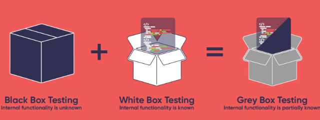

Each organization’s software testing strategy must address
functional and nonfunctional testing. Security testing plans will need to leverage
manual and automated tools, techniques, and processes. Development processes and
methodologies adopted by the organization (i.e., Agile and DevOps) may have a direct
impact on the level of test automation.
Objectives
Identify common security testing techniques.
Describe the testing environment.
Identify the organization's software security standards and guidelines.
Explain the benefits of the crowdsourced security and bug bounty program.
Overview
Ad hoc security testing is neither efficient nor effective.
Software enterprises must define a that informs functional
and nonfunctional test coverage based on attack vectors, a framework such as MITRE
ATT&CK, threat types, or intelligence sources. Regardless of methodology, the
security testing strategy should define the organization's overall approach.
Once an approach is established at the enterprise level,
development organizations should create test plans focused on executing software
testing strategy. The software testing plan should be facilitated by automated
testing tools when processes are repeatable and manual processes when automation is
not viable or a process will not be repeated. The test plan must include provisions
for measuring results. Without pass/fail criteria, the software test results cannot
be objectively evaluated.
Security Testing Techniques
Application security testing techniques are numerous. Commonly
used security testing techniques include white box, black box, and gray box testing,
defined below.
White Box Testing
White box testing is a technique that involves the direct
analysis of source code. Keep in mind that static analysis security testing (SAST)
tools for white box testing scale well. In white box testing, the testers are given
knowledge of how the software is implemented and how it works. The testing focuses
on how the software does what it does.
Figure 1: White Box Testing
White box testing is performed based on the knowledge of how the
system is implemented. It includes analyzing data flow, control flow, information
flow, coding practices, and exception and error handling within the system, to test
the intended and unintended software behavior. White box testing can be performed to
validate whether code implementation follows intended design, to validate
implemented security functionality, and to uncover exploitable
vulnerabilities.1
White box testing requires knowing what makes software secure or
insecure, how to think like an attacker, and how to use different testing tools and
techniques. The first step in white box testing is to comprehend and analyze
available design documentation, source code and other relevant development
artifacts; knowing what makes software secure is a fundamental requirement. Second,
to create tests that exploit software, a tester must think like an attacker. Third,
to perform testing effectively, testers need to know the different tools and
techniques available for white box testing. The three requirements do not work in
isolation, but together.
Black Box Testing
Black box testing techniques, although appropriate for all
levels of testing (component through acceptance), are best suited for uncovering
software issues where specifications exist. With no knowledge of
components/structures, testing remains focused on inputs and outputs and what the
software does, rather than how it is done.
Black box techniques should be used primarily to assess the
security of individual high-risk compiled components; interactions between
components; and interactions between the entire application or application system
with its users, other systems, and the external environment.2
While black box penetration test results can be impressive and
useful to demonstrate how vulnerabilities are exposed in a production environment,
they are not the most effective or efficient way to secure an application. It is
difficult for dynamic testing to test the entire code base, particularly if many
nested conditional statements exist. If the source code for the application is
available, it should be given to the security staff to assist them while performing
their review. It is possible to discover vulnerabilities within the application
source that would be missed during a black box engagement.3
Between black box and white box testing lies gray box testing,
which uses limited knowledge of the program internals. In principle, this could mean
that the tester knows about some parts of the source code and not others, but in
practice, it usually just means that the tester has access to design artifacts more
detailed than specifications or requirements. For example, the tests may be based on
an architecture diagram or a state-based model of the program’s behavior.

Figure 3: Gray Box Testing
Environment
There are several types of environments and trust boundaries
(the points where privilege levels change) that demarcate one environment from the
other. The threat model should include a logical and physical, end-to-end scenario,
and when you are performing environment testing, all the components should be
thoroughly tested.
Interoperability
When conducting environmental testing, certain aspects of
software need to be tested. This includes upstream and downstream dependency checks
and configuration mismatch checks.
Upstream and downstream dependencies check: It is critical to
consider the context of the application or software that you are testing as it
relates to the other applications, both upstream and downstream in the
environment. This is particularly true in cases that address cryptography. For
example, if an application encrypts data, then testing should make sure that the
downstream application that consumes that data has a way to decrypt it and that
in all upstream and downstream levels, the key to encrypt and decrypt is
appropriately secured.
Configuration mismatch check: To prevent cases where the
software runs perfectly in development and testing environments but has issues
in production or user environments, it is critical to check for configuration
mismatches when conducting environment testing.
Test Harness
Typically used for test automation and increased productivity, a
test harness consists of many items such as drivers, stubs, and other tools needed
to successfully run a test. Benefits of using a test harness include ability to
schedule a test, handling, complex conditions that could be difficult to simulate by
testers, keying in inputs for software under test, capturing outputs generated
during the test, and flexibility/support for debugging.
Standards and Guidelines
Examples of organizations that have produced documented
standards and guidelines relevant to software security include:
International Organization for Standardization (ISO)
National Institute of Standards and Technology (NIST)
International Organization for
Standardization (ISO)
The International Organization for Standardization (ISO) creates
documents that provide requirements, specifications, guidelines, or characteristics
that can be used consistently to ensure that materials, products, processes, and
services are fit for their purpose. These are two of their standards pertinent to
software security:
ISO/IEC 27000 series. Information security management systems
ISO/IEC 15408. Information technology, security techniques, evaluation
criteria for IT security
The ISO/IEC 27000 family of standards helps organizations keep
information assets secure. Using this family of standards will help your
organization manage the security of assets such as financial information,
intellectual property, employee details, or information entrusted to you by third
parties.
ISO/IEC 27001. The best-known standard in the family, this provides
requirements for an information security management system (ISMS). An ISMS is a
systematic approach to managing sensitive company information so that it remains
secure. It includes people, processes, and IT systems by applying a risk
management process. It can help small, medium, and large businesses in any
sector keep information assets secure. The ISO/IEC 27001 control sets include a
group of controls related to system acquisition, development, and maintenance.
Controls in this group aim to ensure that information security is an integral
part of information systems throughout the life cycle.
ISO/IEC 27034. This is a standard for application security that offers
guidance on information security to those specifying, designing, and programming
or procuring, implementing, and using application systems.
ISO/IEC 15408. This establishes the general concepts and principles for
the Common Criteria for Information Technology Security Evaluation. Common
Criteria is an international framework and standard for security specification
and evaluation of a variety of IT products (e.g., operating systems, TPM chips).
Common Criteria ratings can be used when evaluating products and building
confidence levels that certain products can meet an organization’s needs and
requirements. Evaluation Assurance Levels (EAL) of 1 through 7 are defined.
Selecting the right protection profile is the key to assurance and confidence
building.
ISO/IEC 29119. This defines a set of standards for software testing
that can be used by any organization when performing any form of software
testing and using any life cycle. The standard provides context for the role of
software testing in quality management and as part of validation and
verification of software systems. It details implementations for tools including
static and dynamic.
ISO/IEC/IEEE 29119-1: Software test definitions and concepts
ISO/IEC/IEEE 29119-2: Software test process model for any SDLC
ISO/IEC/IEEE 29119-3: Software test documentation and templates
ISO/IEC/IEEE 29119-4: Software test design
ISO/IEC/IEEE 29119-5: Software test case development
ISO/IEC 25000. This defines a standard known as Software Quality
Requirements and Evaluation (SQuaRE) aimed at organizing and enhancing software
quality requirements and evaluation processes.
NISTIR 8397
NISTIR 8397: Guidelines on Minimum Standards for Developer
Verification of Software provides guidance for complying with the United States
Executive Order (EO) 14028, Improving the Nation’s Cybersecurity. Although
the document focuses on U.S. EO compliance, it provides excellent general coverage
of secure software testing processes from threat modeling to memory-safe source code
compilation.
The Open-Source Security Testing Methodology Manual (OSSTMM)
offers guidelines for conducting comprehensive security testing that results in
consistent and measurable results.
As published and described by ISECOM:
The Open-Source Security Testing
Methodology Manual (OSSTMM) provides a methodology for a thorough security test,
herein referred to as an OSSTMM audit. An OSSTMM audit is an accurate
measurement of security at an operational level that is void of assumptions and
anecdotal evidence. As a methodology it is designed to be consistent and
repeatable. As an open-source project, it allows for any security tester to
contribute ideas for performing more accurate, actionable, and efficient
security tests.4
4 Pete Herzog; ISECOM; OSSTMM3 - The Open Source
Security Testing Methodology Manual - Contemporary Security Testing and Analysis; https://www.isecom.org/OSSTMM.3.pdf; retrieved July 2023.
OWASP Testing Guide
The OWASP Testing Guide covers the procedures and tools for
testing the security of applications and can be used as part of a comprehensive
application security verification.
This guide can be used as a reference and as a methodology to
help determine the gap between existing practices and industry best practices. It
allows organizations to compare themselves against industry peers, to understand the
magnitude of resources required to test and maintain software, or to prepare for an
audit. The OWASP Testing Guide can benefit developers, software testers, and
security specialists.
Crowdsourcing
Historically, the concept of turning to the public to seek
individuals’ ideas, opinions, feedback, and even contributions has produced good
results for organizations. Crowdsourcing is in general about involving a diverse
group of talent in producing creative work.
As an emerging form of outsourcing software development,
crowdsourcing relies on the collective power of the development community and the
specialized skills within this community to achieve innovation. It relies on the
dissemination of tasks among considerably large and diverse groups of independent
workers.
Crowdsourced Security
It should be noted that crowdsourcing has created a business
model, and many services/activities may subsequently be crowdsourced. Given the
current shortage of cybersecurity talent, with respect to security testing,
communities of ethical vulnerability researchers have been established.
Bug Bounty
Bug bounty programs are publicly available, community-driven
activities with the objective of finding vulnerabilities or exploits in software.
Penetration testers, who are sometimes called bug hunters, dedicate their time and
efforts to this task in return for recognition and compensation. Leveraging a
community of researchers and active testers that commit their efforts to identifying
software issues can benefit all organizations in various industries.
Security Testing Strategy and Plan (6.1)
Each organization’s software testing strategy must address functional and nonfunctional testing. Security testing plans will need to leverage manual and automated tools, techniques, and processes. Development processes and methodologies adopted by the organization (i.e., Agile and DevOps) may have a direct impact on the level of test automation.
Objectives
Overview
Ad hoc security testing is neither efficient nor effective. Software enterprises must define a that informs functional and nonfunctional test coverage based on attack vectors, a framework such as MITRE ATT&CK, threat types, or intelligence sources. Regardless of methodology, the security testing strategy should define the organization's overall approach.
Once an approach is established at the enterprise level, development organizations should create test plans focused on executing software testing strategy. The software testing plan should be facilitated by automated testing tools when processes are repeatable and manual processes when automation is not viable or a process will not be repeated. The test plan must include provisions for measuring results. Without pass/fail criteria, the software test results cannot be objectively evaluated.
Security Testing Techniques
Application security testing techniques are numerous. Commonly used security testing techniques include white box, black box, and gray box testing, defined below.
White Box Testing
White box testing is a technique that involves the direct analysis of source code. Keep in mind that static analysis security testing (SAST) tools for white box testing scale well. In white box testing, the testers are given knowledge of how the software is implemented and how it works. The testing focuses on how the software does what it does.
Figure 1: White Box Testing
White box testing is performed based on the knowledge of how the system is implemented. It includes analyzing data flow, control flow, information flow, coding practices, and exception and error handling within the system, to test the intended and unintended software behavior. White box testing can be performed to validate whether code implementation follows intended design, to validate implemented security functionality, and to uncover exploitable vulnerabilities.1
White box testing requires knowing what makes software secure or insecure, how to think like an attacker, and how to use different testing tools and techniques. The first step in white box testing is to comprehend and analyze available design documentation, source code and other relevant development artifacts; knowing what makes software secure is a fundamental requirement. Second, to create tests that exploit software, a tester must think like an attacker. Third, to perform testing effectively, testers need to know the different tools and techniques available for white box testing. The three requirements do not work in isolation, but together.
Black Box Testing
Black box testing techniques, although appropriate for all levels of testing (component through acceptance), are best suited for uncovering software issues where specifications exist. With no knowledge of components/structures, testing remains focused on inputs and outputs and what the software does, rather than how it is done.
Black box techniques should be used primarily to assess the security of individual high-risk compiled components; interactions between components; and interactions between the entire application or application system with its users, other systems, and the external environment.2
1 Vincent C. Hu, Rick Kuhn, Dylan Yaga; National Institute of Standards and Technology; NIST SP 800-192 -- Verification and Test Methods for Access Control Policies/Models; https://nvlpubs.nist.gov/nistpubs/specialpublications/nist.sp.800-192.pdf; retrieved July 2023.
2 Karen Scarfone, Murugiah Souppaya, Amanda Cody, Angela Orebaugh; National Institute of Standards and Technology; NIST SP 800-115 -- Technical Guide to Information Security Testing and Assessment; https://nvlpubs.nist.gov/nistpubs/Legacy/SP/nistspecialpublication800-115.pdf; retrieved July 2023.
Figure 2: Black Box Testing
Black Box Penetration Tests
While black box penetration test results can be impressive and useful to demonstrate how vulnerabilities are exposed in a production environment, they are not the most effective or efficient way to secure an application. It is difficult for dynamic testing to test the entire code base, particularly if many nested conditional statements exist. If the source code for the application is available, it should be given to the security staff to assist them while performing their review. It is possible to discover vulnerabilities within the application source that would be missed during a black box engagement.3
3 Matteo Meucci and Andrew Muller, project leaders; OWASP Testing Guide 4.0; https://owasp.org/www-project-web-security-testing-guide/assets/archive/OWASP_Testing_Guide_v4.pdf; retrieved July 2023.
Gray Box Testing
Between black box and white box testing lies gray box testing, which uses limited knowledge of the program internals. In principle, this could mean that the tester knows about some parts of the source code and not others, but in practice, it usually just means that the tester has access to design artifacts more detailed than specifications or requirements. For example, the tests may be based on an architecture diagram or a state-based model of the program’s behavior.
Figure 3: Gray Box Testing
Environment
There are several types of environments and trust boundaries (the points where privilege levels change) that demarcate one environment from the other. The threat model should include a logical and physical, end-to-end scenario, and when you are performing environment testing, all the components should be thoroughly tested.
Interoperability
When conducting environmental testing, certain aspects of software need to be tested. This includes upstream and downstream dependency checks and configuration mismatch checks.
Test Harness
Typically used for test automation and increased productivity, a test harness consists of many items such as drivers, stubs, and other tools needed to successfully run a test. Benefits of using a test harness include ability to schedule a test, handling, complex conditions that could be difficult to simulate by testers, keying in inputs for software under test, capturing outputs generated during the test, and flexibility/support for debugging.
Standards and Guidelines
Examples of organizations that have produced documented standards and guidelines relevant to software security include:
International Organization for Standardization (ISO)
The International Organization for Standardization (ISO) creates documents that provide requirements, specifications, guidelines, or characteristics that can be used consistently to ensure that materials, products, processes, and services are fit for their purpose. These are two of their standards pertinent to software security:
The ISO/IEC 27000 family of standards helps organizations keep information assets secure. Using this family of standards will help your organization manage the security of assets such as financial information, intellectual property, employee details, or information entrusted to you by third parties.
NISTIR 8397
NISTIR 8397: Guidelines on Minimum Standards for Developer Verification of Software provides guidance for complying with the United States Executive Order (EO) 14028, Improving the Nation’s Cybersecurity. Although the document focuses on U.S. EO compliance, it provides excellent general coverage of secure software testing processes from threat modeling to memory-safe source code compilation.
Open-Source Security Testing Methodology Manual (OSSTMM)
The Open-Source Security Testing Methodology Manual (OSSTMM) offers guidelines for conducting comprehensive security testing that results in consistent and measurable results.
As published and described by ISECOM:
The Open-Source Security Testing Methodology Manual (OSSTMM) provides a methodology for a thorough security test, herein referred to as an OSSTMM audit. An OSSTMM audit is an accurate measurement of security at an operational level that is void of assumptions and anecdotal evidence. As a methodology it is designed to be consistent and repeatable. As an open-source project, it allows for any security tester to contribute ideas for performing more accurate, actionable, and efficient security tests.4
4 Pete Herzog; ISECOM; OSSTMM3 - The Open Source Security Testing Methodology Manual - Contemporary Security Testing and Analysis; https://www.isecom.org/OSSTMM.3.pdf; retrieved July 2023.
OWASP Testing Guide
The OWASP Testing Guide covers the procedures and tools for testing the security of applications and can be used as part of a comprehensive application security verification.
This guide can be used as a reference and as a methodology to help determine the gap between existing practices and industry best practices. It allows organizations to compare themselves against industry peers, to understand the magnitude of resources required to test and maintain software, or to prepare for an audit. The OWASP Testing Guide can benefit developers, software testers, and security specialists.
Crowdsourcing
Historically, the concept of turning to the public to seek individuals’ ideas, opinions, feedback, and even contributions has produced good results for organizations. Crowdsourcing is in general about involving a diverse group of talent in producing creative work.
As an emerging form of outsourcing software development, crowdsourcing relies on the collective power of the development community and the specialized skills within this community to achieve innovation. It relies on the dissemination of tasks among considerably large and diverse groups of independent workers.
Crowdsourced Security
It should be noted that crowdsourcing has created a business model, and many services/activities may subsequently be crowdsourced. Given the current shortage of cybersecurity talent, with respect to security testing, communities of ethical vulnerability researchers have been established.
Bug Bounty
Bug bounty programs are publicly available, community-driven activities with the objective of finding vulnerabilities or exploits in software. Penetration testers, who are sometimes called bug hunters, dedicate their time and efforts to this task in return for recognition and compensation. Leveraging a community of researchers and active testers that commit their efforts to identifying software issues can benefit all organizations in various industries.